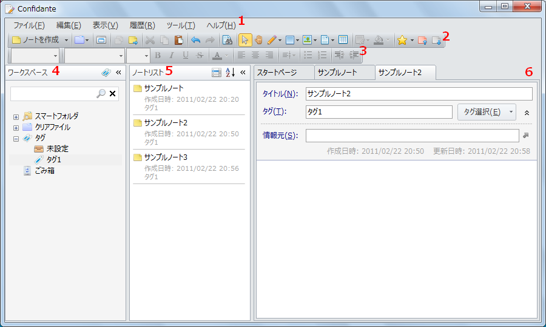
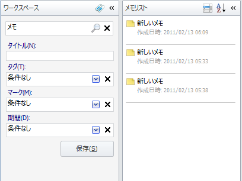

メイン画面
メイン画面の構成を説明します。

1. メインメニュー
基本的な機能を提供するメニューです。
2. メインツールバー
基本的な機能を提供するツールバーです。
3. 書式ツールバー
テキストの書式関係の機能を提供するツールバーです。
4. ワークスペースペイン
ノートを管理するためのペインです。 ワークスペースペインでは，ノートを検索したりスマートフォルダ・タグ・クリアファイル・ごみ箱を使ってノートを管理できます。 ワークスペースペインで選択された項目にしたがって，ノートリストペインにノートの一覧が表示されます。
- 「検索」テキストボックス
ノートを検索するためのテキストボックスです。 Enterキーを押すか右方の「検索」アイコンをクリックすると検索が開始され，「クエリビルダ」が表示されます。 - スマートフォルダ
ノートの検索条件を設定したフォルダです。 スマートフォルダを選択すると，検索条件にマッチするノートがノートリストペインに表示されます。 - タグ
タグを分類するタグです。 タグを選択すると，選択したタグおよびその子孫タグが付けられたノートがノートリストペインに表示されます。 - ごみ箱
削除されたノートが保管されるごみ箱です。 ごみ箱を選択すると，削除されたノートがノートリストペインに表示されます。 - クリアファイル
関連するノートを使用する状況にあわせて保存するためのクリアファイルです。 クリアファイルを選択すると，クリアファイルに格納されたノートがノートリストペインに表示されます。
クエリビルダ
ワークスペースペイン上部の「検索」テキストボックスでEnterキーを押すか「検索」アイコンをクリックすると ノートを検索するための「クエリビルダ」が表示されます。 クエリビルダでは，キーワード(全文検索)，タグ，タイトル，マーク，期間といった条件を指定します。 クエリビルダが表示された状態で， 検索テキストボックスのCtrl+Enterキーを押すか「検索を閉じる」アイコンをクリックするとクエリビルダを閉じます。

- 検索
入力されたキーワードで全文検索します。 マッチしたノートだけがノートリストペインに表示されます。 「 」(半角スペース)で区切るとAND検索，単語の最初に「-」(半角ハイフン)をつけるとNOT検索になります。 - タイトル
タイトルで検索します。 入力された文字列をタイトルに含むノートだけがノートリストペインに表示されます。 - タグ
タグで検索します。 選択したタグが付加されているノートだけがノートリストペインに表示されます。 - タグ
マークで検索します。 選択したマークを含むノートだけがノートリストペインに表示されます。 - 期間
期間で検索します。 作成日時または更新日時またはアクセス日時が指定された期間内であるノートだけがノートリストペインに表示されます。 - 保存
指定した条件を保存してスマートフォルダを作成します。
5. ノートリストペイン
ワークスペースペインの状態に対応してノートの一覧を表示するビューです。 ノートをダブルクリックしたり，右クリックして「開く」を選択するとノートをエディタで開きます。 ノートリストの項目の右上の「プレビュー」アイコンをクリックするか，スペースキーを押すと選択されているノートのプレビューが表示されます。 ノートリスト上をもう一度クリックするか，ノートリスト外にマウスカーソルを移動するか，スペースキーを押すとノートのプレビューを閉じます。
6. ノートエディタ
ノートを編集するためのエディタです。